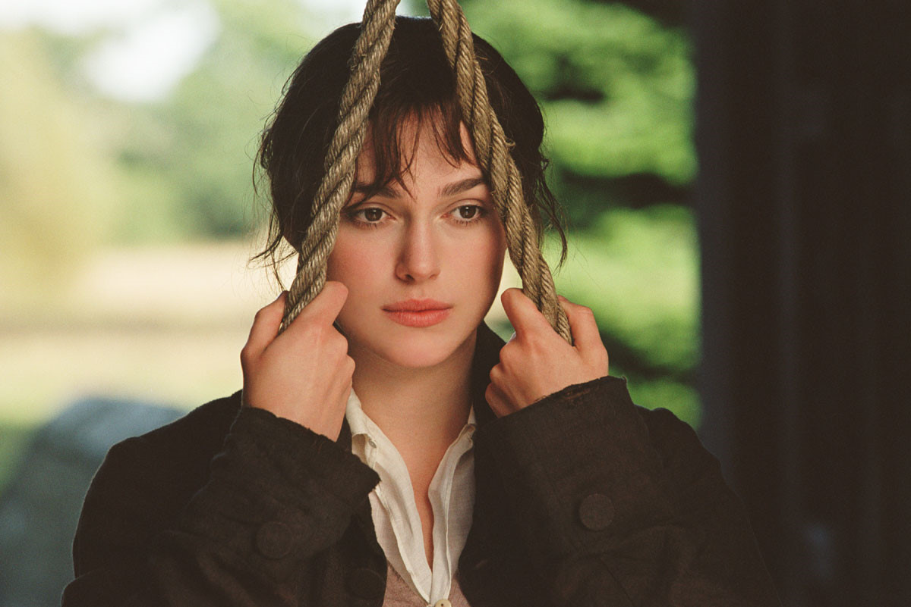

아름답고 매력적인 '엘리자베스(키이라 나이틀리)'는 사랑하는 사람과의 결혼을 믿는 자존심 강하고 영리한 소녀. 좋은 신랑감에게 다섯 딸들을 시집 보내는 것을 남은 인생의 목표로 생각하는 극성스러운 어머니와 자식들을 극진히 사랑하는 너그러운 아버지와 함께 화기애애한 '베넷가(家)'의 다섯 자매 중 둘째이다. 조용한 시골에 부유하고 명망있는 가문의 신사 '빙리'와 그의 친구 '다아시(매튜 맥파든)'가 여름 동안 대저택에 머물게 되고, 대저택에서 열리는 댄스 파티에서 처음 만난 '엘리자베스'와 '다아시'는 서로에게 눈을 떼지 못한다. 하지만 자존심 강한 '엘리자베스'와 무뚝뚝한 '다아시'는 만날 때 마다 서로에게 속마음을 드러내지 않고 사랑의 줄다리기를 하는데, '다아시'는 아름답고 지적인 그녀의 매력에 점점 빠져들고 폭우가 쏟아지는 날, 비바람이 몰아치는 언덕에서 가슴 속 깊은 곳에 담아둔 뜨거운 사랑을 그녀에게 고백한다. 결혼의 조건은 오직 진정한 사랑이라고 믿는 '엘리자베스'는, '다아시'가 자신의 친구 '빙리'와 그녀의 언니 '제인'의 결혼을 '제인'이 명망있는 가문 출신이 아니라는 이유로 반대한 것을 알게 되자, 그를 오만하고 편견에 가득 찬 속물로 여기며 외면하는데. 서로에 대한 오해와 편견에 빠져 눈이 멀어있는 '엘리자베스'와 '다아시'는 과연 서로의 진심을 알고 사랑을 이룰 수 있을까.
엘리자베스 베넷
애칭은 리지 혹은 일라이자. 베넷 씨의 차녀로 21살. 본작의 주인공. 언니인 제인보다는 못하지만 예쁘고 똑똑하며 유머 감각도 있고 통찰력이 뛰어난 것으로 묘사된다. 특히 상냥하면서도 장난기 많은 성격을 가져 작중에서도 그녀의 쾌활함이 잘 드러난다. 다아시는 이런 엘리자베스의 성격과 그녀의 아름다운 눈에 반했다. 자기와는 춤출 만큼 아름답지 않다고 했던 다아시를 싫어하고 있었고, 위컴의 사탕발린 말에 넘어가 더욱 그를 좋지 않게 보고 있던 와중에 다아시가 그녀에게 청혼했으나 거절한다. 또 다아시가 빙리와 제인의 결혼을 반대했기 때문에 엘리자베스는 절대로 이 청혼을 받아들일 수 없었다. 하지만 그녀가 다아시에게 했던 비난들은 잘못된 전제 속에서 나왔던 것이었고 이는 제목의 '편견'이 다아시에 대한 그녀의 편견임을 상징하는 대목이다. 다아시에 대한 오해가 풀린 다음에는 편견에 찌들었던 자신의 태도를 진심으로 뉘우치고, 가드너 부부와 경치를 감상하러 다아시의 영지에 갔을 때 다아시를 칭찬하는 하인들의 증언이며 장사꾼이라고 귀족들에게 경멸당하는 외삼촌 부부를 다아시가 매우 예의바른 태도로 대하자 호감이 싹튼다. 하도 매몰차게 청혼을 거절해서 꿈도 희망도 없는 상황에서 다아시가 여동생을 소개시켜주고, 또 리디아의 야반도주라는 절체절명의 순간에도 발벗고 나서서 도와주자 마음이 완전 기울어버린다. 최종적으로는 레이디 캐서린이 본의 아닌 어시스트를 해주는 바람에 다시 청혼을 받고 경사스럽게 결혼에 성공.